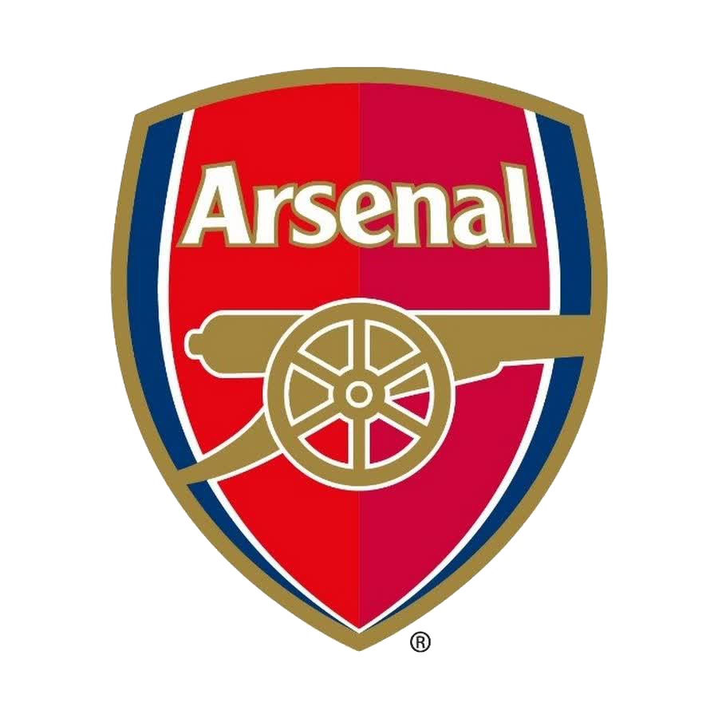
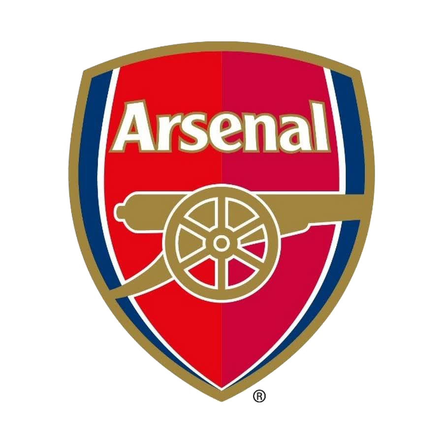

MAN CITY:
Manchester City Football Club are an English professional football club based in Manchester that competes in the Premier League, the top flight of English football. Founded in 1880 as St. Mark's (West Gorton), they became Ardwick Association Football Club in 1887 and Manchester City in 1894. The club's home ground is the City of Manchester Stadium in east Manchester, to which they moved in 2003, having played at Maine Road since 1923. Manchester City adopted their sky blue home shirts in 1894, in the first season with the current name.[4] Over the course of its history, the club has won nine league titles, seven FA Cups, eight League Cups, six FA Community Shields, one UEFA Champions League, one European Cup Winners' Cup, and one UEFA Super Cup. The club joined the Football League in 1892, and won their first major honour, the FA Cup, in 1904. Manchester City had its first major period of success in the late 1960s and early 1970s, winning the league title, FA Cup, League Cup, and European Cup Winners Cup under the management of Joe Mercer and Malcolm Allison. After losing the 1981 FA Cup final, Manchester City went through a period of decline, culminating in relegation to the third tier of English football for the only time in their history in 1998. They since regained promotion to the top tier in 2001–02 and have remained a fixture in the Premier League since 2002–03.
Etihad:
City of Manchester Stadium, COMS, Eastlands, The Blue Camp en Sportcity) is het stadion van de Engelse voetbalclub Manchester City uit Manchester.
Fans:
47,000,000
All Time Goal:
aguero : 260 goal
Josep "Pep" Guardiola Sala (Catalan pronunciation: [ˈpɛb ɡwəɾðiˈɔlə];[3][4][5] born 18 January 1971) is a Spanish professional football manager and former player. Currently managing Premier League club Manchester City, Guardiola is the only manager to win the continental treble twice, the youngest to win the UEFA Champions League, and he also holds the records for the most consecutive league games won in La Liga, the Bundesliga, and the Premier League.[note 1] He is considered to be one of the greatest managers of all time.
Rodrigo Hernández Cascante:(born 22 June 1996), known as Rodri or Rodrigo, is a Spanish professional footballer who plays as a defensive midfielder for Premier League club Manchester City and the Spain national team. Known for his passing, tackles, strength, long shots, and work rate, he is regarded as one of the best defensive midfielders in the world
Kyle Andrew Walker: (born 28 May 1990) is an English professional footballer who plays as a right-back for Premier League club Manchester City and the England national team. Considered one of the best full-backs in the world, Walker is known for his pace, strength and vision.
 


-ERLING HAALAND-
21 July 2000 is a Norwegian professional footballer who plays as a striker for Premier League club Manchester City and the Norway national team.

-KEWIN DE BRUYNE-
28 June 1991 is a Belgian professional footballer who plays as a midfielder for and captains both Premier League club Manchester City and the Belgium national team.

-JOHAN STONS-
28 May 1994 is an English professional footballer who plays as a centre-back or defensive midfielder for Premier League club Manchester City and the England national team.

-Philip Walter Foden-
May 2000 is an English professional footballer who plays as a midfielder for Premier League club Manchester City and the England national team.
-ERLING HAALAND-
21 July 2000 is a Norwegian professional footballer who plays as a striker for Premier League club Manchester City and the Norway national team.
-KEWIN DE BRUYNE-
28 June 1991 is a Belgian professional footballer who plays as a midfielder for and captains both Premier League club Manchester City and the Belgium national team.
-JOHAN STONS-
28 May 1994 is an English professional footballer who plays as a centre-back or defensive midfielder for Premier League club Manchester City and the England national team.
-Philip Walter Foden-
May 2000 is an English professional footballer who plays as a midfielder for Premier League club Manchester City and the England national team.